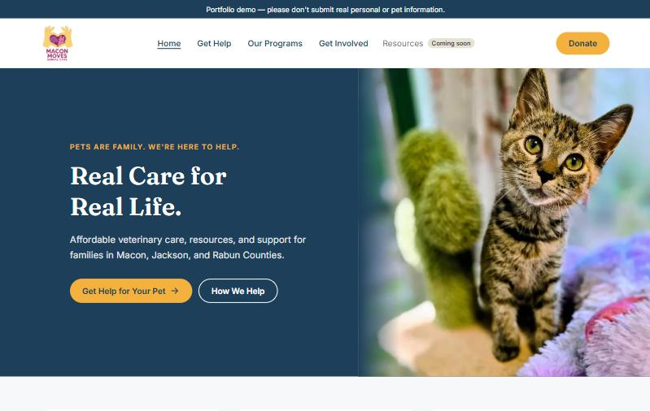

MMAC Hub · Case study
They asked for a website. They needed a system.
Macon Moves Animal Care helps families get affordable veterinary care in Macon, Jackson and Rabun Counties. As it grew across partner hospitals, volunteers, clinics and assistance programs, it needed a way to coordinate the work behind the website.
Role
Product discovery, data model, frontend
Users
Public, MMAC admin, hospital staff, volunteers
Status
Live demo, awaiting MMAC sign-off
Stack
Next.js · Supabase (PostgreSQL) · Zod · Vercel

01 · The problem
The website was the easy part.
Delivering care meant coordinating requests, animals, counties, partner hospitals, schedules, services, volunteers, clinics and financial programs. Putting forms online wouldn't fix that. I needed to understand who needs what information, who makes which decisions, and where things got stuck.
Years of running corporate veterinary hospitals meant I knew many of these workflows from the inside. That made it more important not to design around my own assumptions. MMAC's real processes and people were the source of truth.
02 · One system, four kinds of users
I started with people and permissions, not screens.
01
The public
Ask for help without knowing veterinary terms or how MMAC works inside.
02
MMAC admin
Controls availability, reviews requests and handles exceptions.
03
Hospital staff
Schedule approved cases without seeing more than they need.
04
Volunteers
Get resources and expectations, with no admin access.
03 · Product rules
Turning what people know into rules the software can follow.
01
Keep complexity with the system
People choose the help they need, not a clinical category. Prescreening adapts by species, like heartworm testing for dogs and FeLV/FIV for cats, without asking the requester to know that.
02
Model capacity the way MMAC controls it
The administrator decides what's offered. Weekdays are the default and weekends can be turned on. The public sees what's available, not the partner details behind it.
03
Permissions are workflow design
Each role gets enough access to do its job and no more. That was decided in the model before it became an interface.
04
Capture now what you'll need to prove later
As a nonprofit, MMAC will need to connect spending to programs, funding and geography. The data is captured as the work happens so reports don't mean rebuilding history.
04 · The foundation
Intake is the gate to everything.
Before MMAC can coordinate care, it needs a reliable picture of who's asking, which animals are involved and what they need. So the Assistance Intake data model came first.
It keeps people, households, animals, requests, requested services and prescreening as separate records instead of one big form. Later workflows like scheduling, providers and reporting build on that same foundation.
05 · What shipped · New
From schema to a live site MMAC can review.
A working intake form
Fixed the submission blocker caused by hidden field errors and late validation, and made error messages clear and accessible.
A database I can trust
Backed up, rehearsed and rebuilt the database so every migration is recorded, then verified permissions and admin access.
A branded public site
Home, Our Programs, Get Involved and Get Help, checked against MMAC's real counties, services, contacts and donation link.
Deployed to Vercel and tested end to end on a phone: browsing, donating, submitting a request, signing in as admin and updating its status.
06 · What's next
Rolled out in phases, at MMAC's pace.
Now
Review and sign-off
MMAC reviews the live demo and approves it.
Next
MMAC's own production site
A separate database, email notifications, a privacy notice and admin access for MMAC's team.
Then
The full data model, phase by phase
Scheduling, providers and reporting added one at a time on the intake foundation.